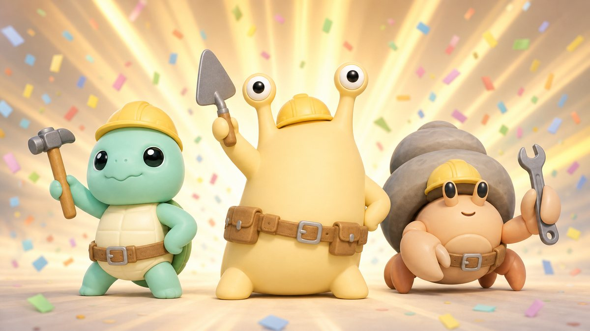
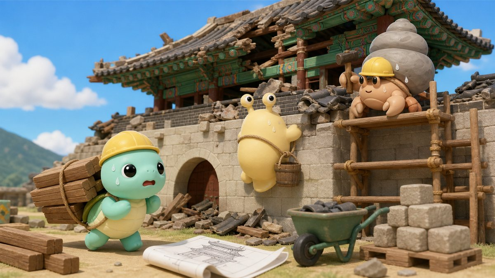

서울이 무너졌다
어느 날, 원인불명의 재난이 서울을 덮쳤다. 남산타워도, 광화문도, 서울역도… 와르르.

원인불명의 재난으로 무너진 서울. "추락해도 안 다치는 자 우대"라는 공고를 본 등껍질 삼총사가 자칭 히어로 건축레인저로 나선다.
휴대폰으로 재료를 주문하면 배송 구역에 진짜 물건이 떨어진다. 들고, 던지고, 정답 도면 위에 맞춰 놓고, 망치질. 고정 안 하면 와르르.


휴대폰으로 재료 호출
들거나 친구에게 던지기
반투명 정답 위에 딱
망치 고정 → 페인트
완성도 → 별 → 코인
남산타워도, 광화문도, 서울역도 와르르. 거리에 나붙은 긴급 모집 공고의 한 줄 — "추락 시 다치지 않는 자 우대(등껍질 보유자 등)". 어? 우리 등껍질 있는데?
어느 날, 원인불명의 재난이 서울을 덮쳤다. 남산타워도, 광화문도, 서울역도… 와르르.

그때 거리에 나붙은 공고 한 장. [서울시 명소 재건 사업] 보수 확실 보장!

"추락 시 다치지 않는 자 우대 (등껍질 보유자 등)"

등껍질 삼총사, 그 자리에서 의기투합.

그렇게 탄생한 히어로. 안전모는 썼다.

보수는 확실하다니까, 일단 짓자!
누구를 고르든 할 수 있는 일은 같습니다. 다른 건 오직 하나 — 등껍질을 얼마나 멋지게 꾸밀 것인가.

공고를 제일 먼저 발견한 장본인. 던지면 의외로 빠릅니다.

망치 담당. 안전장비 세트를 입히면 진짜 반장처럼 보입니다.

남의 껍질을 빌려 쓰는 신세에서 벗어나는 게 목표. 집게로 재료를 야무지게 집습니다.
방을 만들 때 모드·맵·계절·낮밤을 고르세요.
2~4명이 한 팀. 제한 시간 안에 정답 도면과 똑같이 지으면 고득점. 전원 동의하면 조기 종료하고 채점.
투명 벽으로 나뉜 대칭 공터에서 7분 승부. 30초마다 스폰되는 아이템으로 상대를 방해하세요.
타이머도 채점도 없이 마음껏. 완성작은 기록책에 스크랩됩니다.
맵마다 그 장소만의 기믹이 있습니다. 남산에서는 케이블카가 재료를 실어 오고, 돌풍이 발판을 흔듭니다.
청계천기둥·교각·장주를 쌓아 조선의 돌다리를 복원. 첫 현장으로 딱.
 남산
남산곤돌라가 재료를 배송하고, 전망대를 완성하면 엘리베이터 개통. 돌풍 경고음이 울리면 고정 블록 뒤로!
가운데 투명 벽을 사이에 둔 완전 대칭 공사장.
단청 지붕과 근정전 기단을 쌓는 최대 규모 맵. 준비 중.
비와 눈엔 미끄러지고, 강풍엔 재료가 날아갑니다. 벚꽃과 단풍은 그냥 예쁩니다.


옷장에서 등껍질·옷·머리띠를 갈아입히고, 기록책에서 맵별 최고 완성도와 자유 모드 작품을 모아 보세요.